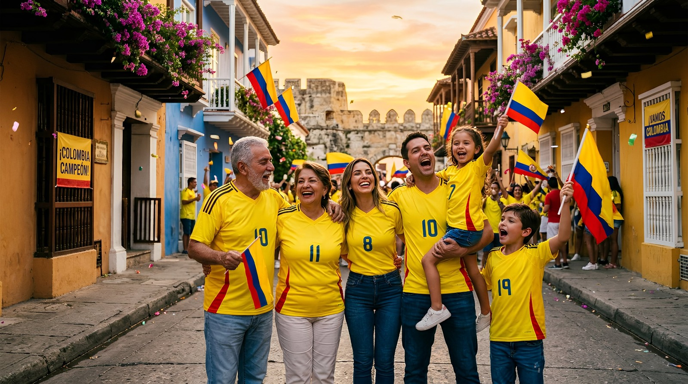

Contacto de prensa
Kit de prensa
Recursos oficiales para medios.
Paquete con logotipos, fotografías oficiales y fondos del Consejo Nacional Electoral 2026, listos para uso editorial.
Repositorio
Últimas publicaciones.
Encuentra en un solo lugar los comunicados oficiales del CNE 2026 más estratégicos, creados para guiar y actualizar a actores electorales y ciudadanos en cada paso del calendario electoral.

29 abr 2026 · Comunicado
Campañas presidenciales: es momento de acreditar a sus auditores de sistemas para fortalecer la vigilancia electoral
Bogotá D.C., 29 de abril de 2026 (@CNE_COLOMBIA). – Con el propósito de fortalecer...
Leer más →
27 abr 2026 · Noticia
Bernie Moreno se suma como observador internacional a las elecciones presidenciales de Colombia
Bogotá D.C., 27 de abril de 2026 (@CNE_COLOMBIA). El senador republicano Bernie Moreno...
Leer más →
23 abr 2026 · Comunicado
CNE insta a campañas a postular auditores y advierte: la vigilancia electoral ya está en marcha
Bogotá D.C., 23 de abril de 2026 (@CNE_COLOMBIA). – El Consejo Nacional Electoral (CNE) hace...
Leer más →
20 abr 2026 · Comunicado
Simulacro nacional del CNE ratifica la efectividad de la Plataforma Única de Postulación y Acreditación de Actores Electorales
Bogotá D.C., 20 de abril de 2026 (@CNE_COLOMBIA). – Con el propósito de garantizar la...
Leer más →15 abr 2026 · Noticia
Colombia unida en democracia: el CNE presentó su estrategia para las elecciones presidenciales del 31 de mayo
Bogotá D.C., 15 de abril de 2026 (@CNE_COLOMBIA). – Este miércoles, en Corferias, el Consejo...
Leer más →
15 abr 2026 · Comunicado
CNE declara la elección de Representante a la Cámara por la circunscripción internacional
Bogotá D.C., 15 de abril de 2026 (@CNE_COLOMBIA). – Luego de surtir el debido proceso...
Leer más →
14 abr 2026 · Comunicado
Garantías plenas en elecciones atípicas de Sitionuevo, Magdalena, y Concepción, Santander
Bogotá D.C., 14 de abril de 2026 (@CNE_COLOMBIA). – El Consejo Nacional Electoral (CNE) informa...
Leer más →
6 abr 2026 · Comunicado
El CNE instalará mañana jueves, 9 de abril, el proceso de escrutinio nacional de las elecciones de Senado
Al finalizar esta jornada, la autoridad electoral oficializará la elección de los 102 integrantes...
Leer más →
1 abr 2026 · Kit de prensa
Recursos para medios — logos, fotografías y ficha técnica del CNE 2026
Descarga el paquete oficial con logotipos, infografías y datos clave del proceso electoral...
Descargar →